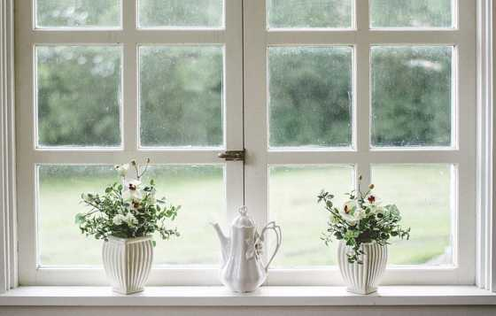
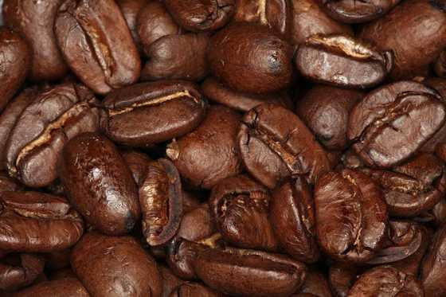
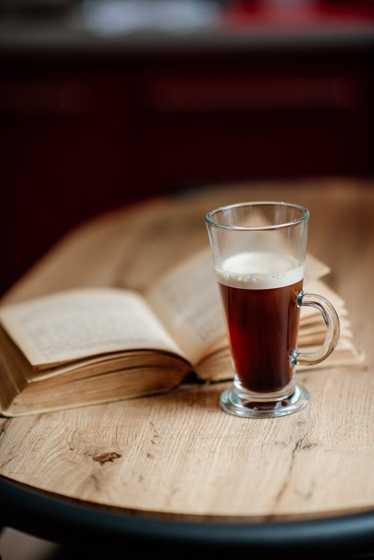
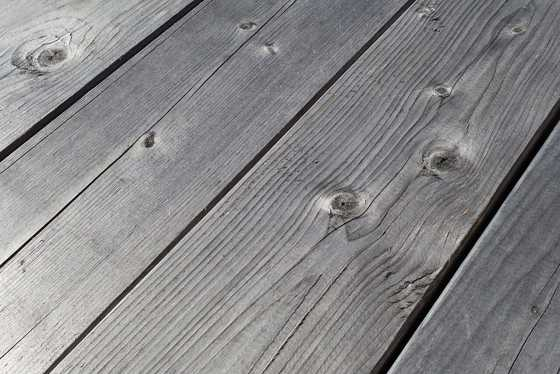
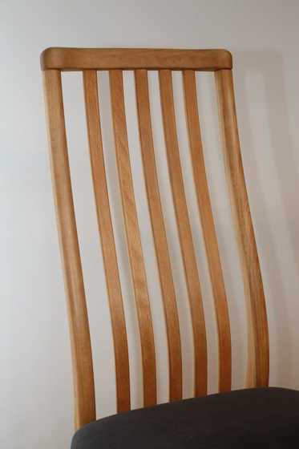
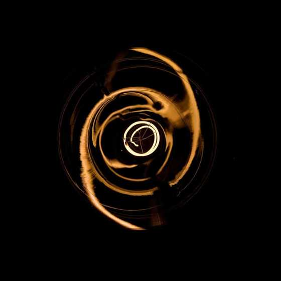
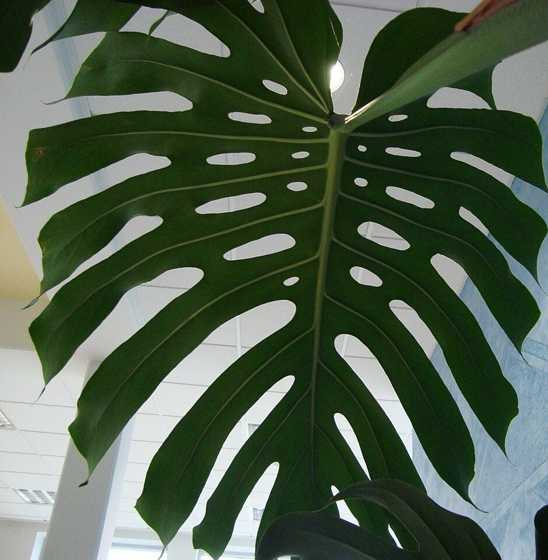
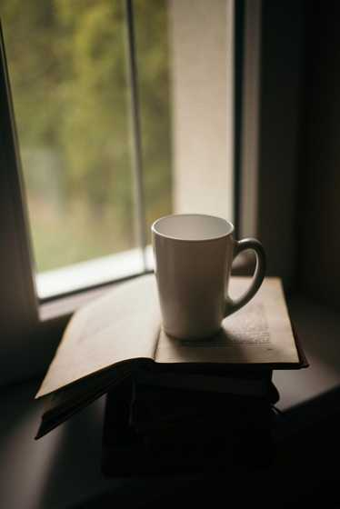

茨城県鹿嶋市小山・週末のカフェ
週末に、ちょっと一服。
ひと息つく場所。
店名の「Pause」は「ひと休み」、「ippuku」は「一服」。忙しい日々の合間に立ち止まる時間を、小さなカフェで。
お店の由来・想い
週末だけ、ひらくカフェ。
Pause Cafe ippukuは、鹿嶋市小山で週末に営業しているカフェです。Instagramのプロフィールには「鹿嶋市小山に週末cafeをオープンして3年目に突入」とあります。営業時間は11:00〜16:00、ご予約はInstagramのDMで受け付けているとのことです。
店名の意味や開店のきっかけは確認できていません。冒頭の「ひと休み」「一服」という読みは、制作側のイメージです。
ひと息のイメージ
カップ、窓辺、木のぬくもり。
写真はフリー素材のイメージで、店舗の実際の様子ではありません。










口コミ
お客さまの声(イメージ例)
イメージ例週末の昼下がり、ゆっくり過ごせました。
肩の力が抜けて、いい一服になりました。
イメージ例落ち着いた雰囲気のお店です。
本を読みながら、のんびり。また行きたいです。
イメージ例お出かけの途中に立ち寄りました。
あたたかい一杯でほっとしました。
上記は制作側が作成したイメージ例で、実際のお客さまの声ではありません。
アクセス
ご案内
| 所在地 | 〒311-2222 茨城県鹿嶋市小山１１０２−１８ |
|---|---|
| 営業 | 週末営業・11:00〜16:00(Instagramプロフィールより。変更の可能性あり) |
| 定休日 | 準備中 |
| 電話 | 準備中 |
| ご予約 | InstagramのDMで受付(プロフィールより) |
| 駐車場 | 準備中 |
| SNS | Instagram @cafe.ippuku |